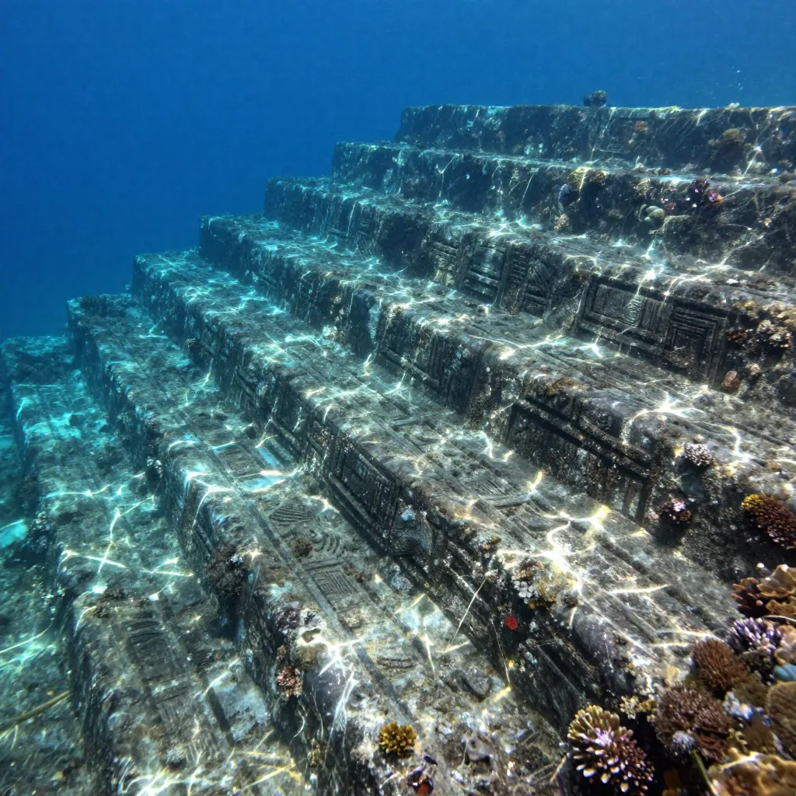
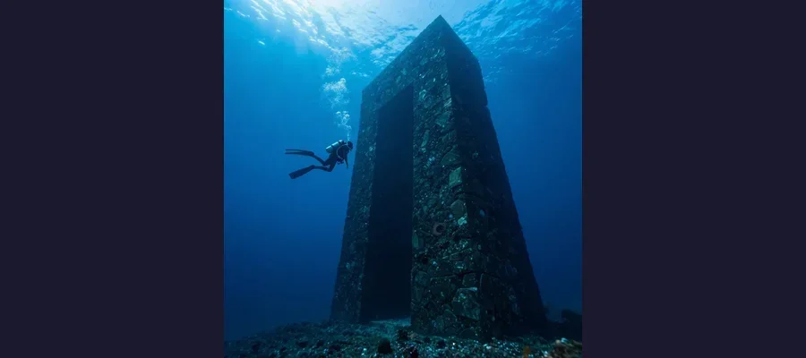

The Yonaguni Monument: Japan's Underwater Mystery

The Yonaguni Monument rises from the ocean floor off the westernmost island of Japan.
In 1986, a local dive tour operator named Kihachiro Aratake plunged into the warm waters off the southern coast of Yonaguni Island, the westernmost inhabited island of Japan, searching for a new vantage point to observe the hammerhead sharks that flock to the area each winter. What he found instead would spark one of the most heated debates in modern archaeology. Lying beneath approximately 25 meters of turquoise water, stretched across the seafloor like the skeleton of a colossal ancient building, was a massive stone formation featuring flat terraces, near-vertical walls, sharp right angles, and what appeared to be a broad, perfectly level pathway running along its base. Aratake had discovered what the world would come to know as the Yonaguni Monument — a submerged rock structure so geometric, so angular, and so unlike anything else on the ocean floor that it has divided geologists, archaeologists, and alternative researchers for nearly four decades. Is it a natural geological formation, sculpted by millions of years of tectonic activity and ocean currents? Or is it something far more extraordinary — evidence of an ancient civilization that flourished before the last Ice Age, when sea levels were dramatically lower, and whose greatest structures now lie hidden beneath the waves?
The Yonaguni Monument, also called the Yonaguni Submarine Ruins, is located in the Philippine Sea, approximately 100 meters off the southern coast of Yonaguni, the southernmost of Japan's Ryukyu Islands. Yonaguni itself is closer to Taiwan (about 108 kilometers away) than to the main Japanese islands, and its population of roughly 1,700 people has inhabited the island for at least two thousand years. The monument's main formation measures approximately 150 meters long by 40 meters wide, with its highest point resting just 5 meters below the surface and its base descending to a depth of about 40 meters. The rock is composed of fine-grained sandstone and mudstone belonging to the Yaeyama Group, a geological formation dating to the Early Miocene epoch, approximately 20 million years ago. The debate that has consumed researchers since Aratake's discovery boils down to a single question: are the monument's remarkably regular features the work of human hands, or the product of natural geological processes?
The Architecture of the Deep: What Lies Beneath
The main formation at Yonaguni exhibits a collection of features that, to many observers, look less like natural geology and more like the remains of an enormous stepped platform or pyramid. The most striking of these features include a large, apparently flat upper terrace measuring roughly 100 meters in length; a series of stepped formations descending in regular increments of one to two meters, resembling a massive staircase; near-vertical walls rising up to 10 meters from the seafloor, meeting at angles of approximately 90 degrees; and a broad, flat pathway — often called "The Road" — running along the base of the main structure, measuring about 5 meters wide and appearing remarkably uniform in width for a considerable distance. Additional features include what some observers have described as a "stone circle", a "twin megalith", and various smaller platforms and ledges that proponents of the artificial theory argue are too regular and too numerous to be purely natural.
The visual impression of the monument is undeniably striking. Photographs and video footage taken by divers show massive angular formations rising from the sandy seafloor, their flat surfaces and sharp edges casting dramatic shadows in the filtered sunlight. The overall appearance has been compared to the stepped pyramids of Mesoamerica, the terraced temples of ancient Mesopotamia, and even the monumental stonework of Machu Picchu. The resemblance is not lost on those who argue that the formation is artificial — or, at minimum, that natural formations were modified and enhanced by human hands in deep antiquity.
🌊 The Ice Age Key: Why Sea Level Matters
The most compelling argument for the artificial origin of the Yonaguni Monument hinges on sea level. During the Last Glacial Maximum, approximately 20,000 years ago, global sea levels were between 120 and 130 meters lower than they are today. The formation now lies at depths of 5 to 40 meters — meaning that during the last Ice Age, it would have been completely above water, standing on dry land as part of a land bridge connecting what are now the Ryukyu Islands to the Asian mainland. If the monument is artificial, it would have been built during a period when this region was terra firma, not ocean floor. This is the crux of the argument: if the formation was created by humans, it must have been built before sea levels rose at the end of the last Ice Age, approximately 10,000 to 8,000 years ago. This would make it one of the oldest known monumental structures on Earth — older than Gobekli Tepe, older than the oldest known cities, older than the dawn of what conventional archaeology considers civilization.

Geometric formations on the Yonaguni Monument suggest possible artificial construction — or remarkable natural fracturing.
The Scientist and the Skeptic: Kimura vs. Schoch
The two most prominent voices in the Yonaguni debate represent opposing poles of the controversy. On one side stands Dr. Masaaki Kimura, a Japanese marine geologist at the University of the Ryukyus who has spent over two decades studying the monument and is its most vigorous proponent as an artificial structure. On the other stands Dr. Robert Schoch, an American geologist at Boston University best known for his controversial redating of the Great Sphinx of Giza, who has dived at Yonaguni and argues forcefully that the formation is entirely natural.
Kimura's position has evolved over the years. Initially cautious, he has become increasingly convinced that the monument shows evidence of human modification. He points to several features that he argues are inconsistent with purely natural formation: the uniform width of "The Road", the apparent right angles where walls meet, the presence of what he interprets as tool marks on certain surfaces, and the existence of smaller surrounding formations that he believes form a coherent architectural complex. Kimura has proposed that the monument may have been a castle, temple, or ceremonial center belonging to an ancient civilization — possibly the Jomon people, the prehistoric culture that inhabited Japan from approximately 14,000 BCE to 300 BCE and is known for its elaborate pottery and some of the earliest evidence of settled village life in East Asia. Kimura has also suggested connections to the myth of Lemuria or Mu, a hypothetical lost continent in the Pacific that has been a staple of occult and alternative history since the nineteenth century.
Schoch, who first dived at Yonaguni in 1997, offers a very different interpretation. He acknowledges that the formation is visually impressive and that its features are striking, but he argues that every aspect of the monument can be explained by the natural properties of the rock. The sandstone and mudstone of the Yaeyama Group are sedimentary rocks that naturally fracture along joint planes — pre-existing lines of weakness in the rock that produce flat surfaces and right angles when the rock breaks. The region is also tectonically active, and earthquakes are a powerful natural force for fracturing rock along these planes. Schoch argues that the stepped terraces are consistent with the natural layering of sedimentary strata, that the vertical walls are the result of jointing, and that "The Road" is a natural platform created by differential erosion along a particularly resistant layer of rock. He notes that similar formations, with similar apparent regularity, can be found on land in many locations around the world — the famous Giant's Causeway in Northern Ireland being one example of natural geology producing remarkably geometric features.
🎯 The Official Position: Japan Says No
It is worth noting that neither the Japanese Agency for Cultural Affairs nor the government of Okinawa Prefecture recognize the Yonaguni Monument as an important cultural artifact. Neither government agency has carried out research or preservation work on the site. The formation is not listed as a cultural property, no archaeological excavation has been officially sanctioned, and no peer-reviewed archaeological journal has published evidence supporting the artificial theory. The mainstream archaeological community overwhelmingly considers the monument to be a natural geological formation, and the claims of artificial origin have been described as pseudoarchaeological by multiple scholars. This does not, of course, settle the question — but it does provide important context for evaluating the competing claims.
The Lemuria Connection: Myth, Memory, or Imagination?
Some proponents of the artificial theory have connected the Yonaguni Monument to the legend of Mu (or Lemuria), a hypothetical lost continent in the Pacific Ocean first proposed in the nineteenth century by the writer James Churchward and later adopted by Theosophist Helena Blavatsky. According to Churchward, Mu was a vast Pacific civilization that sank beneath the ocean in a cataclysm approximately 12,000 years ago — a timeline that roughly corresponds to the end of the last Ice Age and the submergence of the Yonaguni formation. The Lemuria/Mu hypothesis has no support in mainstream geology or archaeology. There is no geological evidence for a lost continent in the Pacific, and the concept has been thoroughly debunked by modern plate tectonics. However, the persistence of the Mu legend has given the Yonaguni debate an additional layer of mythology that has proven irresistible to alternative researchers and popular media. Kimura himself has acknowledged the parallels between the Mu legend and his theory but has generally framed his arguments in more prosaic terms, focusing on the geological and archaeological evidence rather than mythological connections.

Divers explore the massive submerged terraces, which span over 150 meters in length.
- Right angles and vertical walls — Proponents argue these are too precise for nature; geologists note that sedimentary rock naturally fractures along joint planes at 90-degree angles
- Step-like terraces — Supporters see deliberate architecture; geologists see natural strata exposed by erosion and tectonic activity
- "The Road" — Argued by some as a ceremonial pathway; explained by others as a resistant rock layer eroded less than surrounding material
- Tool marks — Kimura identifies possible chisel marks; skeptics attribute these to natural weathering and biological erosion
- Surrounding formations — Kimura maps a complex of related structures; critics see natural variation in an extensive reef system
Why Yonaguni Matters: The Stakes of an Underwater Mystery
The Yonaguni Monument matters not because it is likely to rewrite history — mainstream science is clear that it is a natural formation — but because it exposes the deepest tensions in how we study the past. The possibility, however remote, that an unknown civilization flourished on now-submerged coastlines before the end of the last Ice Age is one of the most tantalizing questions in archaeology. The coastal settlement theory — the idea that early human settlements were concentrated along coastlines that are now underwater — is widely accepted by archaeologists. Rising sea levels at the end of the last Ice Age inundated millions of square kilometers of what was once dry, habitable land. Some of humanity's earliest communities may now lie beneath the ocean, inaccessible to conventional archaeology and largely unmapped.
🐟 Diving Into the Unknown: The Challenge of Underwater Archaeology
The Yonaguni debate highlights the extraordinary difficulty of underwater archaeological investigation. Unlike land sites, where careful excavation can reveal layers of occupation, construction techniques, and cultural artifacts, underwater sites are accessed only through diving — a physically demanding, time-limited activity that allows for observation and limited sampling but not systematic excavation. The monument lies at depths of 5 to 40 meters, requiring technical diving equipment and significant training. Visibility is variable, and the experience of diving at the site — floating through clear water above massive angular formations — is powerfully affecting in a way that can subtly influence interpretation. Several prominent archaeologists and geologists who have dived at Yonaguni have described the emotional impact of the experience, noting that it is difficult to see the formation in person and not feel that it is artificial — even when the rational analysis of the evidence points to a natural origin. This gap between visual impression and geological evidence is at the heart of the Yonaguni controversy and serves as a cautionary tale about the role of perception in scientific investigation.
- Masaaki Kimura (University of the Ryukyus) — Marine geologist; argues the monument is artificial or human-modified; proposes Jomon civilization origin
- Robert Schoch (Boston University) — Geologist; argues the formation is entirely natural; attributes features to jointing and erosion in sedimentary rock
- Patrick D. Nunn (University of the Sunshine Coast) — Geographer and Pacific researcher; attributes formation to natural processes but acknowledges the need for more underwater archaeology
- Graham Hancock — Alternative history author; featured Yonaguni in "Underworld" as potential evidence of a lost Ice Age civilization
🌊 The Monument at the Edge of Knowledge
The Yonaguni Monument sits at the boundary between what we know and what we wish were true. It is a formation of undeniable visual power — a massive, angular, terraced structure lying on the ocean floor in one of the most tectonically active regions on Earth. To look at it is to want it to be artificial. To study it as a geologist is to recognize that nature, given enough time and the right kind of rock, can produce features that look uncannily like architecture. The mainstream scientific consensus is clear: the Yonaguni Monument is a natural geological formation, produced by the fracturing of sedimentary rock along joint planes, enhanced by millions of years of erosion and tectonic activity. No artifacts, no tools, no pottery, no bones, no inscriptions — none of the evidence that would accompany a genuine archaeological site — have ever been found at or near the monument. But the formation has served a valuable purpose even if it is natural: it has drawn attention to the vast, submerged landscapes that were exposed during the last Ice Age and that may contain genuine archaeological treasures yet to be discovered. The coastlines that early humans walked, fished, and built upon are now buried beneath tens of meters of ocean, and we have explored only a fraction of them. Like the enduring mysteries of Stonehenge, the questions raised by Atlantis, the enigma of the Easter Island moai, and the ancient engineering of Derinkuyu's underground city, Yonaguni reminds us that the past is larger than we know and that the ocean holds more secrets than we have begun to ask about. The monument itself may be natural. But the questions it raises — about what lies beneath the waves, about the civilizations that may have risen and fallen before recorded history, about the limits of what we can know — are as real as the stone itself. Sometimes the most important discoveries are not the ones that confirm our theories, but the ones that remind us how much we have yet to learn.
Frequently Asked Questions
Is the Yonaguni Monument man-made?
The mainstream scientific consensus is that the Yonaguni Monument is a natural geological formation. Marine geologist Masaaki Kimura has argued for decades that the formation shows evidence of human modification, citing its right angles, stepped terraces, and apparent tool marks. However, most geologists and archaeologists attribute these features to the natural fracturing of sedimentary rock along joint planes, enhanced by tectonic activity and erosion. No artifacts, tools, or cultural materials have been recovered from the site, and neither the Japanese government nor any major archaeological institution recognizes the formation as cultural property.
How old is the Yonaguni Monument?
The rock itself is approximately 20 million years old, belonging to the Early Miocene Yaeyama Group. The formation of the features visible today — the terraces, walls, and angles — is the result of geological processes operating over millions of years. If the monument were artificial, the human modification would have occurred before the formation was submerged by rising sea levels at the end of the last Ice Age, approximately 8,000 to 10,000 years ago. However, there is no archaeological evidence supporting human activity at the site.
Can I dive at the Yonaguni Monument?
Yes. The site is a popular destination for technical divers and can be accessed through dive operators based on Yonaguni Island. The main formation lies at depths of approximately 5 to 40 meters, making it accessible to experienced divers with appropriate certifications. The area is also famous for its hammerhead shark populations, which congregate near the island during the winter months. Diving conditions can be challenging, with currents and variable visibility, so the site is recommended for advanced divers.
What is the connection to the lost continent of Mu?
The legend of Mu (or Lemuria) is a nineteenth-century speculative hypothesis proposing that a vast Pacific continent once existed and was destroyed in a cataclysm. Some alternative researchers have connected the Yonaguni Monument to this legend, noting that the timeline of Mu's supposed destruction roughly coincides with the submergence of the Yonaguni formation at the end of the last Ice Age. However, the Mu hypothesis has no support in modern geology or archaeology. Plate tectonics has thoroughly debunked the concept of a lost Pacific continent, and the connection between Yonaguni and Mu is considered purely speculative.
📖 Recommended Reading
Want to learn more? Check out Underworld: The Mysterious Origins of Civilization by Graham Hancock on Amazon for a deeper dive into submerged ancient ruins and the possibility of lost Ice Age civilizations. (As an Amazon Associate, we earn from qualifying purchases.)
References & Further Reading
- Wikipedia: Yonaguni Monument — Overview of the discovery, geology, and natural formation debate
- Wikipedia: Yonaguni - The westernmost inhabited island of Japan — Geographic and historical context for the island and surrounding waters
- Wikipedia: Masaaki Kimura — Marine geologist and leading proponent of the artificial structure theory
- Wikipedia: Robert Schoch — Geologist who argues the Yonaguni formation is natural
- Ancient Civilizations Library: Yonaguni Monument — Detailed analysis of features and the natural vs. artificial debate
- Wikipedia: Jomon Period — The prehistoric Japanese culture proposed by Kimura as potential builders
- Wikipedia: Mu (Mythical Lost Continent) — The legendary Pacific continent connected to the Yonaguni debate
Editorial note: reconstructions are continuously revised as imaging and inscription studies improve. See our Editorial Policy.